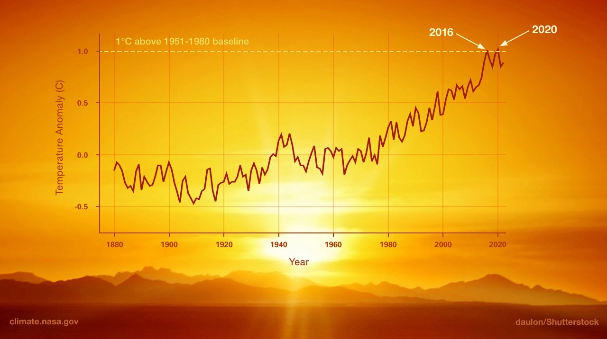

.png)
Table of contents |
|---|
This paper presents a novel adaptive active learning strategy. The most accurate classification model from a heterogeneous classifier pool is selected at each learning epoch. Our goal is to achieve greater incremental improvement in accuracy, compared to using a single type of classification model throughout the process. The strategy is evaluated on benchmark data sets. We further consider an application to texture classification problems in sonar mosaic imagery and compare it with non-adaptive active learning and traditional machine learning approaches. Our results show that...We conclude that...
Satellites allow us to measure the earths features at a completely different angle, instead of from the
surface of the earth or by planes in the sky. This advantage allows measurements to be taken from remote
areas where it can be difficult to collect data, such as the pacific ocean, or the Sahara desert (geoimage,2023).
We can use this data to measure features of the earth such as land height.
Figure 1: Global warming 1880-2020>
we must find a path in order for us to adapt and protect ourselves from the damage we have instigated, this can be
done through the adaptation of satellite technology.
The Surface Water and Ocean Topography Mission (SWOT) uses a satellite with the technology capable of measuring the sea level, whilst aiming to measure at a degree of accuracy of 1cm(Launch of the International SWOT (Surface Water and Ocean Topography) Mission (Nasa broadcast),2022,18:20), the satellite will cover at least 86% of the globe (of the worlds lakes and rivers wider than 100 metres (Wiki, 2023). Scientists will be able to access this information using an instrument known as the . Measuring sea levels
Remote sensing is a way of recording something without physically touching it from a distance
(GISGeography,2023).
Satellites can collect data in two fundamental methods, Active or Passive remote sensing.
Active remote sensing is where a satellite transmits radiation (usually electromagnetic) to a point of interest,
then receives the radiation. Whereas passive remote sensing is where the receiver captures backscattered radiation
such as light, Infrared or radiation, then uses this to create an image of an object. Take a camera for example;
cameras capture light reflected of an object then uses this to create an image. An advantage of passive remote sensing
would be that it is able to create coloured images, a disadvantage would be that no images would be created if there is
no radiation to receive, this can happen when its dark. Also, if there are clouds or particulates in the air, the
quality of the image would be affected. Active remote sensing allows data to be recorded regardless of the daylight or
cloud coverage. However, as active remote sensing sends and receives its own radiation, this allows satellites to record
data day and night, which is why Synthetic-Aperture Radar (SAR) is commonly used in satellites. (Amos Gikunda, 2021).
Table 1: The advantages and
disadvantages of using passive
remote sensing.
| Advantages | Disadvantages |
|---|---|
| 0.7m | 2 |
| 3.3m | 4 |
| 2.6 | 5 |
| 17.4 | 7 |
| 8.8m | 9 |
1) National Aeronautics and Space Administration (2022) Launch of the International SWOT (Surface Water and Ocean Topography) Mission
(Nasa broadcast), 16 December 2022. Accessed date 30/10/2023
2) Surface Water and Ocean Topography. Accessed date: 30/10/2023>
3) GISGeography (2023) What is Remote sensing? The Definitive Guide. Accessed at 15/11/23.>